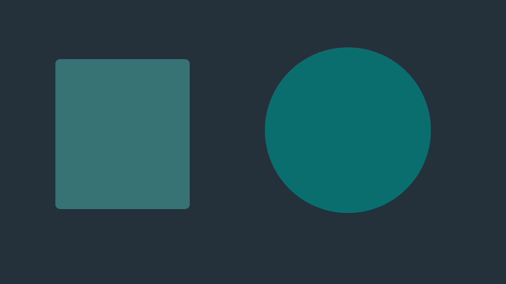

<link rel="stylesheet" href="./specimen/examples.css" />
<section class="cap-specimen" aria-labelledby="s-embed">
  <h2 id="s-embed">An embed before the click: the site's poster, a play button and what it is</h2>
  <p class="cap-muted">No request goes to the service until the reader asks. Without script the link opens the service; with script (Prelum's <code>render/enhance</code> in a post, the React wrapper on a page) the player takes its place.</p>
  <div class="player-sample-column">
    <figure class="cap-player" data-kind="embed" data-service="youtube" id="embed-poster"><a class="cap-player-facade" href="https://www.youtube.com/watch?v=dQw4w9WgXcQ" data-embed-src="https://www.youtube-nocookie.com/embed/dQw4w9WgXcQ?autoplay=1" data-embed-title="A keynote on publishing with Prelum"><span class="cap-player-play" aria-hidden="true"></span><span class="cap-player-label">Watch on YouTube: A keynote on publishing with Prelum</span></a><figcaption>The talk, 38 minutes.</figcaption></figure>
  </div>
</section>

<section class="cap-specimen" aria-labelledby="s-embed-plain">
  <h2 id="s-embed-plain">An embed with no poster, and a song</h2>
  <div class="player-sample-column">
    <figure class="cap-player" data-kind="embed" data-service="vimeo" id="embed-plain"><a class="cap-player-facade" href="https://vimeo.com/123456789" data-embed-src="https://player.vimeo.com/video/123456789?dnt=1&amp;autoplay=1" data-embed-title="Setting up a new site in ten minutes"><span class="cap-player-play" aria-hidden="true"></span><span class="cap-player-label">Watch on Vimeo: Setting up a new site in ten minutes</span></a></figure>
    <figure class="cap-player" data-kind="embed" data-service="spotify" id="embed-audio"><a class="cap-player-facade" href="https://open.spotify.com/episode/0123456789abcdefghijkl" data-embed-src="https://open.spotify.com/embed/episode/0123456789abcdefghijkl" data-embed-title="Episode 12: shared site code"><span class="cap-player-play" aria-hidden="true"></span><span class="cap-player-label">Listen on Spotify: Episode 12: shared site code</span></a></figure>
  </div>
</section>

<section class="cap-specimen" aria-labelledby="s-react">
  <h2 id="s-react">The React wrapper: a click puts the player in place</h2>
  <div class="player-sample-column" data-mount="embed"></div>
</section>

<section class="cap-specimen" aria-labelledby="s-video">
  <h2 id="s-video">Video and audio</h2>
  <p class="cap-muted">The native players at the column's width. The video holds its shape from its width and height, shows the site's poster, and downloads nothing before play; the audio's transcript is one link away.</p>
  <div class="player-sample-column">
    <figure class="cap-player" data-kind="video" id="video"><video src="/media/sample-demo.mp4" poster="./specimen/poster.svg" width="1280" height="720" controls preload="none" loading="lazy" playsinline aria-label="A short demo"><track kind="captions" src="/media/sample-demo.vtt" srclang="en" label="English" default></video><p class="cap-player-transcript"><a href="/writing/demo-transcript">Transcript: A short demo</a></p><figcaption>What the demo shows.</figcaption></figure>
    <figure class="cap-player" data-kind="audio" id="audio"><audio src="/media/sample-talk.mp3" controls preload="none" loading="lazy" aria-label="A talk on shared site code"></audio><p class="cap-player-transcript"><a href="/writing/talk-transcript">Transcript: A talk on shared site code</a></p></figure>
  </div>
</section>

<template data-specimen="dock" data-title="The dock: a track loaded and paused, the settings inline; narrower than 48rem, behind More" data-height="300">
  <div data-mount="dock"></div>
</template>

<template data-specimen="dock-phone" data-title="The dock on a phone: More opens the bottom sheet with speed, sleep, chapters and the transcript" data-height="300" data-width="390">
  <div data-mount="dock"></div>
</template>

<template data-specimen="surface" data-title="A track's page: the surface (waveform, scrubber with chapter ticks, transport, settings), key moments, chapters, hosts and the synced transcript; the dock steps aside while the surface is on screen" data-height="900">
  <div data-mount="surface"></div>
</template>

<section class="cap-specimen" aria-labelledby="s-standin">
  <h2 id="s-standin">A surface with no stored peaks: the stand-in shape, labeled a preview</h2>
  <div class="player-sample-column" data-mount="standin"></div>
</section>

<section class="cap-specimen" aria-labelledby="s-preview">
  <h2 id="s-preview">The editor's still waveform, with chapter markers, and before there are peaks</h2>
  <div class="player-sample-column" data-mount="preview"></div>
</section>

<section class="cap-specimen" aria-labelledby="s-clip">
  <h2 id="s-clip">The inline audio button: a short clip inside running text</h2>
  <p class="cap-muted">With no script it is a link to the clip; with it, a button that plays in place and shows that it is playing. A clip that cannot load brings the link back.</p>
  <div class="player-sample-column">
    <p id="clip-sample">Capsomer <span class="player-sample-ipa">/ˈkap.sə.mər/</span> <span class="cap-player-clip" data-cap="player" data-kind="clip"><a class="cap-player-clip-link" href="./specimen/tone.ts" aria-label="Hear how Capsomer is pronounced"><svg class="cap-player-clip-icon" viewBox="0 0 24 24" width="20" height="20" aria-hidden="true" focusable="false"><path d="M4 9.5h3.5L12 5.5v13l-4.5-4H4z" fill="currentColor"/><path class="cap-player-clip-wave" d="M15 9.2a4 4 0 0 1 0 5.6" fill="none" stroke="currentColor" stroke-width="1.8" stroke-linecap="round"/><path class="cap-player-clip-wave" data-wave="2" d="M17.6 6.6a7.6 7.6 0 0 1 0 10.8" fill="none" stroke="currentColor" stroke-width="1.8" stroke-linecap="round"/></svg></a><button type="button" class="cap-player-clip-button" data-src="./specimen/tone.ts" aria-label="Hear how Capsomer is pronounced" aria-pressed="false" hidden><svg class="cap-player-clip-icon" viewBox="0 0 24 24" width="20" height="20" aria-hidden="true" focusable="false"><path d="M4 9.5h3.5L12 5.5v13l-4.5-4H4z" fill="currentColor"/><path class="cap-player-clip-wave" d="M15 9.2a4 4 0 0 1 0 5.6" fill="none" stroke="currentColor" stroke-width="1.8" stroke-linecap="round"/><path class="cap-player-clip-wave" data-wave="2" d="M17.6 6.6a7.6 7.6 0 0 1 0 10.8" fill="none" stroke="currentColor" stroke-width="1.8" stroke-linecap="round"/></svg></button></span> is the family's design system.</p>
    <p>Playing, forced for the specimen: <span class="cap-player-clip"><button type="button" class="cap-player-clip-button" aria-label="Hear the sample clip" aria-pressed="true" id="clip-playing"><svg class="cap-player-clip-icon" viewBox="0 0 24 24" width="20" height="20" aria-hidden="true" focusable="false"><path d="M4 9.5h3.5L12 5.5v13l-4.5-4H4z" fill="currentColor"/><path class="cap-player-clip-wave" d="M15 9.2a4 4 0 0 1 0 5.6" fill="none" stroke="currentColor" stroke-width="1.8" stroke-linecap="round"/><path class="cap-player-clip-wave" data-wave="2" d="M17.6 6.6a7.6 7.6 0 0 1 0 10.8" fill="none" stroke="currentColor" stroke-width="1.8" stroke-linecap="round"/></svg></button></span></p>
  </div>
</section>

<script type="module">
  // The specimen's clip is a tone made in the page (no sound file in the repository); then the
  // behavior module shows the button.
  import { toneUrl } from "./specimen/tone.ts";
  import { enhance } from "./player.ts";
  const url = toneUrl(1.2, 330);
  for (const el of document.querySelectorAll("#clip-sample .cap-player-clip-link")) el.setAttribute("href", url);
  for (const el of document.querySelectorAll("#clip-sample .cap-player-clip-button")) el.dataset.src = url;
  enhance();
</script>
